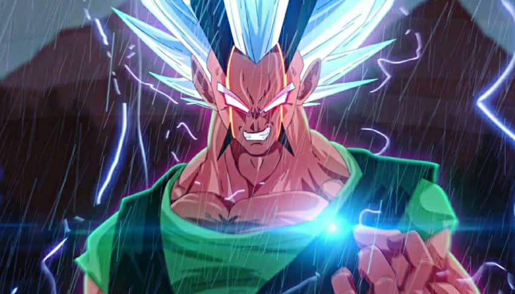

Zaiko

Zaiko es el hijo ilegitimo de Goku, este nacio gracias a la suprema Kaioshin del oeste que cuando Goku se ospedaba en el planeta Yadrat le robo una gran muestra de sangre a este para crear al ser definitivo conocido como Zaiko (Mitad Saiyayin y mitad Kaioshin) yendo a la tierra para destruirla, aunque no contando que Goku tendria una transformacion muy poderosa la cual lo terminaria derrotando.
Aunque no solo se quedaria ahi, ya que Zaiko en el infierno seguiria aumentando su nivel de poder pasando por todos los infiernos y ganando muchisimo poder, sacrificando igual la otra mitad de su alma para conseguir derrotar a un demonio de esas dimensiones, aunque luego de eso seria condenado inmediatamente al infierno 2 sin poderse mover hasta la llegada de Goku y Vegeta (Quienes necesitaban su ayuda para derrotar a Cellbuzer) pero como no termino siendo derrotado y perdiendo todo su poder (dandoselo a Goku y Vegeta).
Aunque hay que aclarar que luego de eso igual Zaiko fue pieza fundamental en esa batalla, ya que le dijo a Goku las bases para llegar al SSJ10 y tambien lucharia junto a Vegeta para detener a Cellbuzer con su maximo poder, sacrificando la otra mitad de su alma para ganar tiempo y desapareciendo con el paso de este, aunque ganando el suficiente para que Goku lo derrote y ganando asi la batalla.